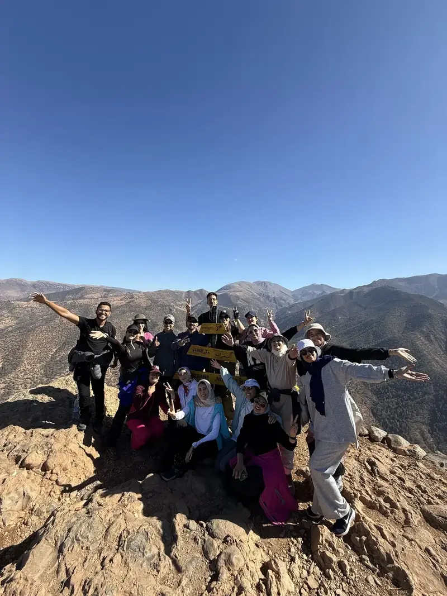
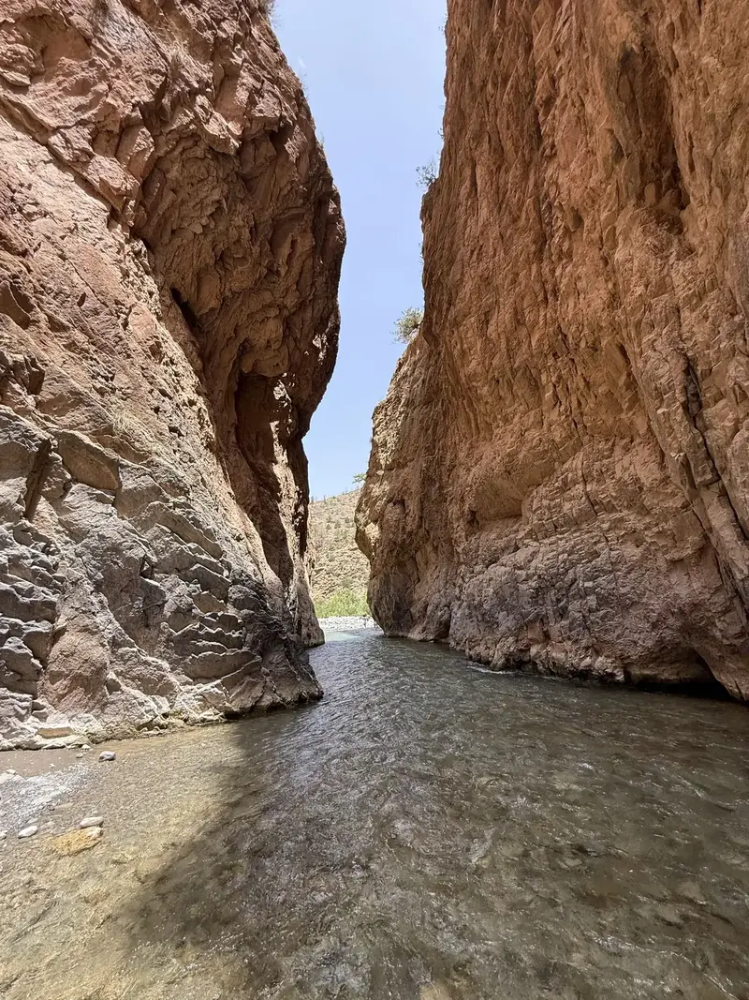
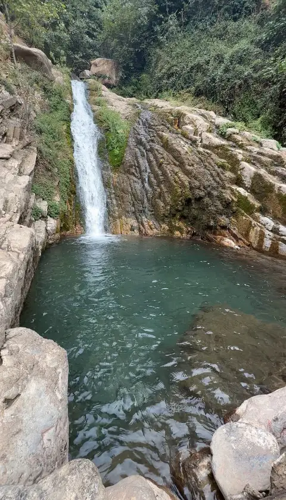
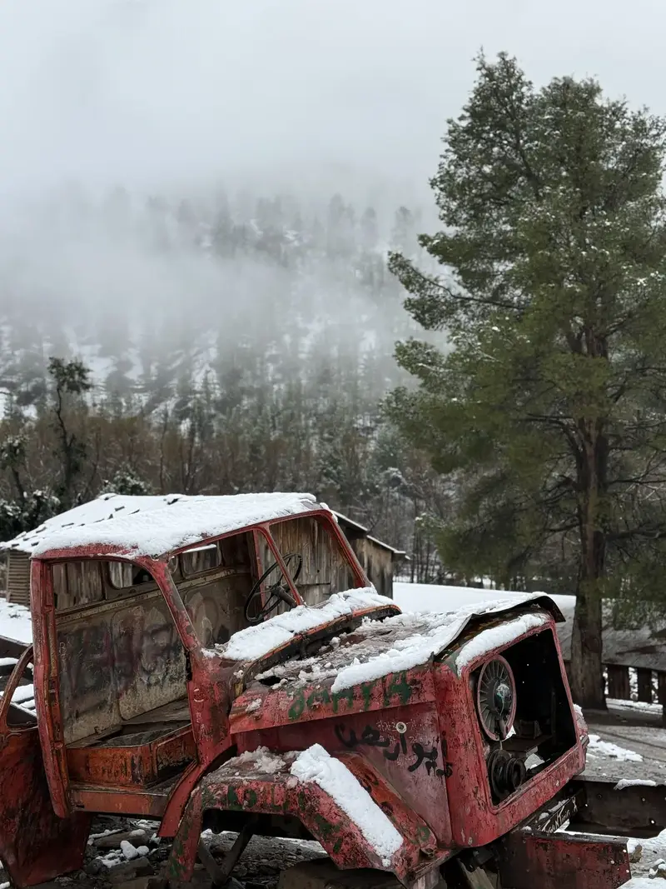

Deux expériences de randonnée
Aventure au sommet ou circuit nature complet
Le sommet est une randonnée de montagne séparée. Le circuit nature regroupe les gorges de l’Oued Ahansal, les cascades Wakoudene et l’ancienne camionnette dans une seule sortie et pour un seul prix.

Parcours 1
Randonnée au Sommet du Jebel Imsfrane
Montez au sommet du Jebel Imsfrane, culminant à 1 868 mètres. Le parcours offre des vues panoramiques sur la vallée de l’Oued Ahansal et les montagnes du Haut Atlas.
- Environ 5–10 heures
- 1,868 m
- Modéré à difficile
- Prix pour le groupe
- Rendez-vous au point de départ convenu.
- Ascension guidée par les sentiers.
- Pause panoramique et photos au sommet.
- Descente et retour au point de départ.
Randonnée complète / Groupe
300 DH
Réserver le sommet

Parcours 2
Circuit Nature Complet de l’Oued Ahansal
Il s’agit d’une seule sortie suivant le même trajet. Le prix unique comprend les gorges de l’Oued Ahansal, les cascades Wakoudene et l’ancienne camionnette. Chaque lieu n’est pas payé séparément.
Les trois lieux sont inclus
- Gorges de l’Oued Ahansal
- Cascades Wakoudene
- Visite de l’Ancienne Camionnette
- Guide local pour tout le circuit
- Environ 3–5 heures
- Trois lieux, un seul trajet
- Facile à modéré
- Prix pour le groupe
- Marche et pauses photo dans les gorges.
- Continuation vers les cascades Wakoudene.
- Visite et pause photo à l’ancienne camionnette.
- Retour après la visite des trois lieux.
Les trois lieux ensemble / Groupe
200 DH
Réserver le circuit
Inclus dans le circuit à 200 DH
Trois lieux dans une seule sortie
Les trois étapes suivent le même trajet et sont incluses dans un seul prix par groupe.
1
Gorges de l’Oued Ahansal
Découvrez la rivière, les hautes falaises et les passages naturels de la vallée.

2
Cascades Wakoudene
Continuez à travers les paysages naturels vers les cascades et les bassins saisonniers.

3
L’Ancienne Camionnette
Terminez le circuit par une visite et une pause photo originale près de ce lieu emblématique.
Sécurité en montagne
Préparez votre randonnée
Suivez le guide et respectez les conditions météo.
Chaussures adaptées
Portez des chaussures confortables et stables.
Emporter de l’eau
Prévoyez suffisamment d’eau potable.
Conditions météo
Le parcours peut changer pour votre sécurité.
Rester avec le groupe
Suivez le guide et ne quittez pas le parcours.
Galerie randonnée
Découvrez les deux expériences
FAQ
Questions fréquentes
Non. Le sommet est une randonnée séparée au prix de 300 DH par groupe.
Le prix de 200 DH par groupe comprend les gorges de l’Oued Ahansal, les cascades Wakoudene et l’ancienne camionnette dans une seule sortie.
Non. Les trois lieux ensemble coûtent seulement 200 DH pour tout le groupe.
Oui. Le parcours peut être adapté selon la météo, le niveau de la rivière et l’état des sentiers.
Réservez votre parcours
Sommet ou circuit nature complet ?
Envoyez-nous votre date, le nombre de personnes et le parcours souhaité. Nous confirmerons la disponibilité.